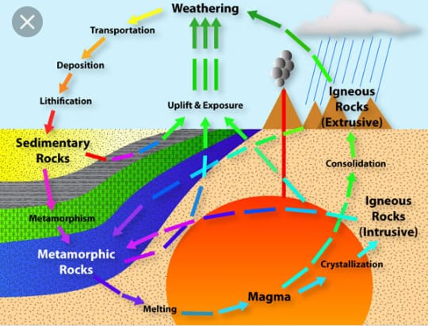

Igneous rocks form as hot magma cools down. This causes it to harden into solid rock. Yet, how fast it cools matters a lot. Cooling speed is what determines whether an igneous rock is intrusive or extrusive.
Anytime that magma breaks through the earth’s surface (becoming lava), it will form extrusive rock. The relatively cold airon the surface rapidly cools the magma. Additionally, large crystals don’t have enough time to form in extrusive rock. It cools too fast!

Oppositely, there are times when the magma in a plume never even reaches the earth’s surface. It pushes into the crustwithout breaking it. This creates volcanic landforms. Inside of them, you find intrusive igneous rock.The sediment which makes up a sedimentary rock determines its type. Sand makes up sandstone, and mud makes up mudstone. This seems obvious. But, it’s not as clear for some kinds of sedimentary rocks. As a result, scientists have invented a classification system for them.
Over long periods of time, sediment builds up in certain areas. For example, rocks might erode and have their sediment deposited at the bottom of the lake. As more and more sediment builds up, the grains at the bottom compact. If there’s enough pressure, they might turn into sedimentary rock. This process is cementation. It tends to produce rocks in large layers, called strata.
To clarify, cementation sounds a lot like metamorphism. But, it’s different in that it’s creating a rock, not changing one.
Metamorphic rocks are justchanged sedimentary and igneous rocks. When either of these two types is heatedor put under pressure, they can become metamorphic rock. We call this process metamorphism.
Usually, metamorphism takes a long time. Over thousands of years, pressure can deform rock layers deep within the earth. This converts them into metamorphic rock. Another way this can happen is through contact metamorphism. This is when magma rises through the earth and ‘bakes’ the rock it touches.